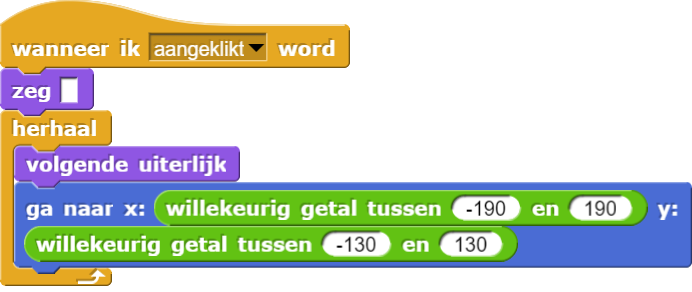

Maak er een Spel Van
Op deze pagina ga je je app aanpassen zodat het een echt spel wordt.
Elke keer als de
speler op Alonzo klikt, zal hij een beetje lichter van kleur worden. Het doel van het
spel is om op
Alonzo te klikken totdat hij verdwijnt.
-
Om te zorgen dat Alonzo blijft bewegen, heb je een blok nodig dat zegt "herhaal
dit". Er is een blok dat precies dit doet:
Pas je Alonzo script aan zodat het blijft lopen.
De serie van blokken binnen hetherhaalblok zal herhaald worden totdat je op het rode stopteken drukt, of totdat het script op een andere manier gestopt wordt. - Alonzo beweegt te snel! Gebruik het blok om hem langzamer te laten bewegen. Je kunt de wachttijd groter of kleiner maken als je wilt.
- Het commando past Alonzo's helderheid aan. Probeer verschillende getallen als invoer om te zien wat het effect is.
-
 Pas vervolgens je script aan zodat Alonzo iets lichter wordt, elke keer dat hij aangeklikt wordt.
Pas vervolgens je script aan zodat Alonzo iets lichter wordt, elke keer dat hij aangeklikt wordt.
- Speel je spel een paar keer. Pas je code aan zodat het de gewenste moeilijkheidsgraad krijgt.
Je kunt het spookeffect en de wachttijd gebruiken om het spel
moeilijker of makkelijker te maken.
-
Zet nog een blok in je programma om het
spookeffect met -5te veranderen, elke keer dat Alonzo beweegt zonder dat er op hem wordt geklikt. Hoe verandert dit het spel?
Hoe verandert dit het spel?